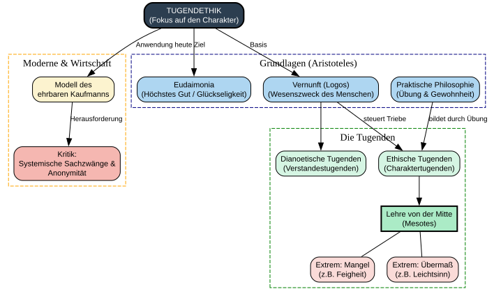

Code
import graphviz
from IPython.display import display
# Erstellung des Digraph-Objekts
dot = graphviz.Digraph(comment='Struktur der Tugendethik', format='png')
# Globale Layout-Attribute
dot.attr(rankdir='TB', size='12,12')
dot.attr('node', shape='rectangle', style='filled,rounded', fontname='Arial', fontsize='11')
dot.attr('edge', fontname='Arial', fontsize='10')
# --- Kernkonzept ---
dot.node('TE', 'TUGENDETHIK\n(Fokus auf den Charakter)', fillcolor='#2C3E50', fontcolor='white', penwidth='2')
# --- Sektion 1: Aristotelische Grundlagen ---
with dot.subgraph(name='cluster_basis') as b:
b.attr(label='Grundlagen (Aristoteles)', style='dashed', color='navy')
b.node('Glück', 'Eudaimonia\n(Höchstes Gut / Glückseligkeit)', fillcolor='#AED6F1')
b.node('Vernunft', 'Vernunft (Logos)\n(Wesenszweck des Menschen)', fillcolor='#AED6F1')
b.node('Praxis', 'Praktische Philosophie\n(Übung & Gewohnheit)', fillcolor='#AED6F1')
# b.edge('Glück', 'Vernunft', style='invis') # Invisible edge for vertical alignment
# b.edge('Vernunft', 'Praxis', style='invis') # Invisible edge for vertical alignment
# --- Sektion 2: Systematik der Tugenden ---
with dot.subgraph(name='cluster_system') as s:
s.attr(label='Die Tugenden', style='dashed', color='green')
s.node('Dianoetisch', 'Dianoetische Tugenden\n(Verstandestugenden)', fillcolor='#D5F5E3')
s.node('Ethisch', 'Ethische Tugenden\n(Charaktertugenden)', fillcolor='#D5F5E3')
# s.edge('Dianoetisch', 'Ethisch', style='invis') # Invisible edge for vertical alignment
# Die Lehre von der Mitte (Mesotes)
s.node('Mitte', 'Lehre von der Mitte\n(Mesotes)', fillcolor='#ABEBC6', style='filled,bold')
s.node('Mangel', 'Extrem: Mangel\n(z.B. Feigheit)', fillcolor='#FADBD8')
s.node('Uebermass', 'Extrem: Übermaß\n(z.B. Leichtsinn)', fillcolor='#FADBD8')
# s.edge('Mitte', 'Mangel', style='invis') # Invisible edge for vertical alignment
# s.edge('Mangel', 'Uebermass', style='invis') # Invisible edge for vertical alignment
s.edge('Ethisch', 'Mitte')
s.edge('Mitte', 'Mangel', dir='none')
s.edge('Mitte', 'Uebermass', dir='none')
# --- Sektion 3: Moderne Anwendung & Kritik ---
with dot.subgraph(name='cluster_modern') as m:
m.attr(label='Moderne & Wirtschaft', style='dashed', color='orange')
m.node('Kaufmann', 'Modell des\nehrbaren Kaufmanns', fillcolor='#FCF3CF')
m.node('Kritik', 'Kritik:\nSystemische Sachzwänge &\nAnonymität', fillcolor='#F5B7B1')
# m.edge('Kaufmann', 'Kritik', style='invis') # Invisible edge for vertical alignment
# --- Verbindungen ---
dot.edge('TE', 'Glück', label='Ziel')
dot.edge('TE', 'Vernunft', label='Basis')
dot.edge('Vernunft', 'Dianoetisch')
dot.edge('Vernunft', 'Ethisch', label='steuert Triebe')
dot.edge('Praxis', 'Ethisch', label='bildet durch Übung')
dot.edge('TE', 'Kaufmann', label='Anwendung heute')
dot.edge('Kaufmann', 'Kritik', label='Herausforderung')
# Anzeige des Diagramms
display(dot)